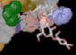
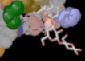

NORMAL3D
SYNOPSIS
normal3d reads a Raster3D input file from stdin, applies
any coordinate manipulations specified in the header, and writes the
modified file to stdout.
normal3d [-h] [-expand] [-stereo] < infile.r3d > normalized.r3d
The output file from normal3d describes exactly the same image as the
original input file. Header records are left unchanged except for
the transformation matrix (which becomes the identity matrix) and the
format specifiers (which are set to *).
The -h flag suppresses all header
records in the output file. All objects in the input file
are also in the output file, but their coordinate descriptions have been
normalized (i.e. the original transformation matrix has been
applied).
The -expand flag causes the program to
In-line and normalize all instances of file indirection in the input stream.
This results in a single render input file containing no file indirection.
The default is to simply copy file indirection lines (those begining
with @) to the new input file without opening them or normalizing their
contents.
The -stereo flag causes the program to produce two additional files,
left.r3d and right.r3d, containing header records suitable
for rendering the normalized object description file as a side-by-side
stereo pair (see
stereo3d).
normal3d also reports the total number of objects in the input file by
object type, and gives the array sizes which would be required for the
render program to process this file. It may therefore be used to
determine how large the
array sizes in render
should be set, should one
of your image descriptions exceed the values compiled into render.
EXAMPLES
Feed a large file through normal3d to judge array size requirements for rendering:
normal3d < largeinputfile.r3d > /dev/null
tmat (v' = v * tmat):
-0.7543700 0.2779890 -0.6327600 0.0000000E+00
8.3310001E-02 0.9392580 0.3367110 0.0000000E+00
0.6530600 0.2012850 -0.6973090 0.0000000E+00
-54.14897 -48.99439 -13.01923 25.00000
-------------------------------
spheres = 67
cylinders = 5128
triangles = 23402
-------------------------------
Compare these to the array dimensions in render:
special materials = 1 (check against MAXMAT)
total objects = 47402 (check against MAXOBJ)
details = 506943 (check against MAXDET)
shadow details = 364323 (check against MAXSDT)
-------------------------------
True center of input coordinates (not used):
-0.7435400 3.0629992E-02 -0.4582600
AUTHORS
Ethan A Merritt.
 Back to top
 Raster3D homepage
Back to top
 Raster3D homepage